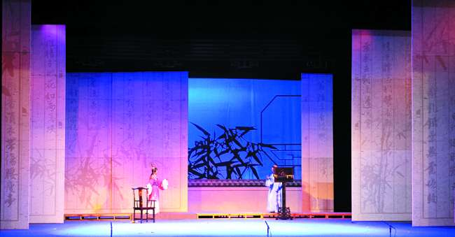

越剧，中国主要戏曲剧种之一，起源于浙江嵊州，兴盛于上海，主要流行于苏浙沪等地区，目前为中国第二大戏曲剧种。 越剧曲调婉转柔美，小提琴协奏曲《梁祝》的主旋律就采用了越剧的曲调。
越剧在早期只有男演员，进入上海发展后因女班演出广受欢迎，便发展为各角色均由女演员扮演的女子越剧。1949年后，开始招收部分男演员，但现在仍以女子越剧为主。越剧原来流行于苏浙沪一带，后在中国广受欢迎。
越剧舞台语音的基础语音是嵊县方言音。在越剧发展过程中，越剧语音在嵊州方言的基础上，吸收了中州音韵和官话的语音，这促使越剧扩大了观众范围。
2006年5月，越剧被列为中国文化部第一批国家级非物质文化遗产。
表演
行当
越剧角色行当分为小生、小旦、老生、老旦、小丑、大面六个。目前越剧剧目多以小生小旦为主。自从1940年代，越剧改革以来，行当界限并不严格。

小旦 指年轻女性角色。可分为悲旦、花旦、闺门旦、花衫、正旦、武旦六种。
小生 指年轻男性角色。可细分为书生、穷生、官生、武生四种。
老生 指老年男性角色。可分为正生、老外两种。
老旦 指老年女性角色。如《红楼梦》里的贾母，《西厢记》里的崔夫人。
小丑 又叫小花脸，越剧里的滑稽角色。可分为长衫丑、官丑、短衫丑、女丑。
大面 又叫大花脸，多为奸恶角色，有时亦为耿直角色。如《追鱼》中的包公。
唱腔
越剧中的主要腔调是[四工调]、[尺调]、[弦下调]，除此之外，还有[C调腔],以男演员使用较多。
音韵
越剧舞台语音的基础语音是嵊县方言音。部分采用近似普通话的读音，也有部分字音沿用嵊州方言中的生活语音。目前的越剧演出语音以前者为主。
做工
越剧表演的程式主要借鉴自绍剧、京剧、昆曲等剧种。
艺术流派
越剧目前常被提及的艺术流派有尹(桂芳)派、徐(玉兰)派、毕(春芳)派、范(瑞娟)派、陆(锦花)派、袁(雪芬)派、王(文娟)派、戚(雅仙)派、傅(全香)派、金(采凤)派、吕(瑞英)派、张(云霞)派、张(桂凤)派十三个流派。
除此之外还有竺水招派、吴小楼派、徐天红派、商芳臣派等流派。尹(桂芳)派、徐(玉兰)派、毕(春芳)派、范(瑞娟)派、陆(锦花)派、竺(水招)为小生流派，袁(雪芬)派、王(文娟)派、戚(雅仙)派、傅(全香)派、金(采凤)派、吕(瑞英)派、张(云霞)派为小旦流派，张桂凤派、吴小楼派、徐天红派、商芳臣派为老生流派。
越剧的流派发展对推动越剧的繁荣发展作出了重大贡献。

音乐
越剧音乐优美抒情，因而广受欢迎。小提琴协奏曲《梁山伯与祝英台》即是以越剧曲调为基础的。
乐器
越剧的主奏乐器为鼓板、越胡，其他乐器还有扬琴、二胡、中胡、大提琴等。演奏乐队传统上以中国民族乐器为主，分吹、拉、弹、打四部分。
舞台美术
越剧舞台美术独具特色，并曾为黄梅戏、潮剧、琼剧、豫剧等剧种所借鉴。越剧服装清丽柔美，并借鉴了古代仕女图样式，不同于传统戏曲服装繁琐的花式，旦角尤为明显。同京剧等剧种相比，越剧化装以及布景较为写实化。
化装
越剧的化装兼采传统水粉化装法与电影话剧化装两者的长处，更多的使用油彩化装，风格柔美明快。在旦角化妆方面，越剧使用独特的越剧古装头套，造型上借鉴古装仕女画的发式。在古装戏中一般不使用脸谱式化装，与其他剧种相比更生活化。
服装
20世纪60年代，尹桂芳《何文秀》中所穿戏服。嵊州越剧博物馆藏。越剧服装具有清丽柔美淡雅的特点。服装色彩上多用中间色，力求简洁，避免浓重的妆饰。越剧旦角服装，多借鉴中国传统人物画（特别是仕女画）与传统美术，裙子多为百褶裙，多系在上衣外。在衣料上，主要用无反光性面料，如绉缎、乔其纱等。
布景、道具
越剧布景与表演风格密切结合，采用立体布景，较其他剧种写实化。越剧中的道具不少直接采用生活用品或仿真制作，刀枪棍剑等常用道具则轻巧化。